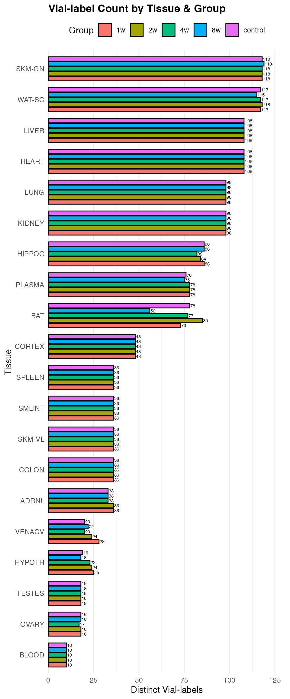
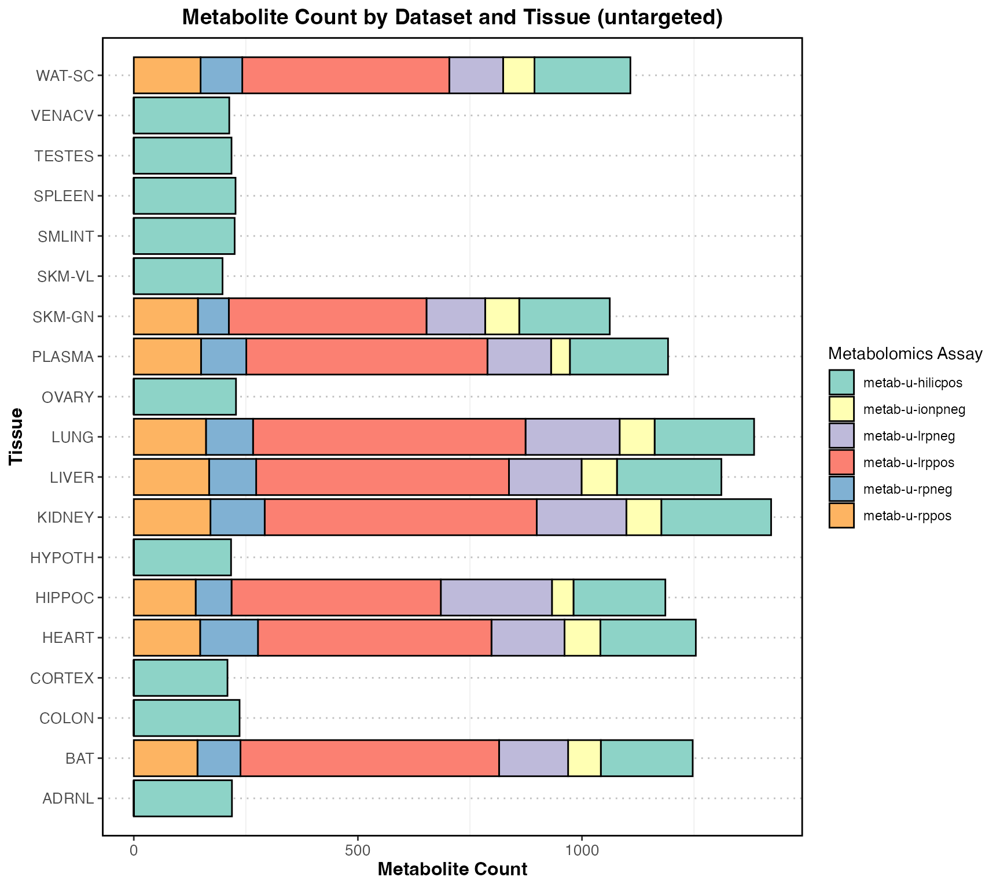
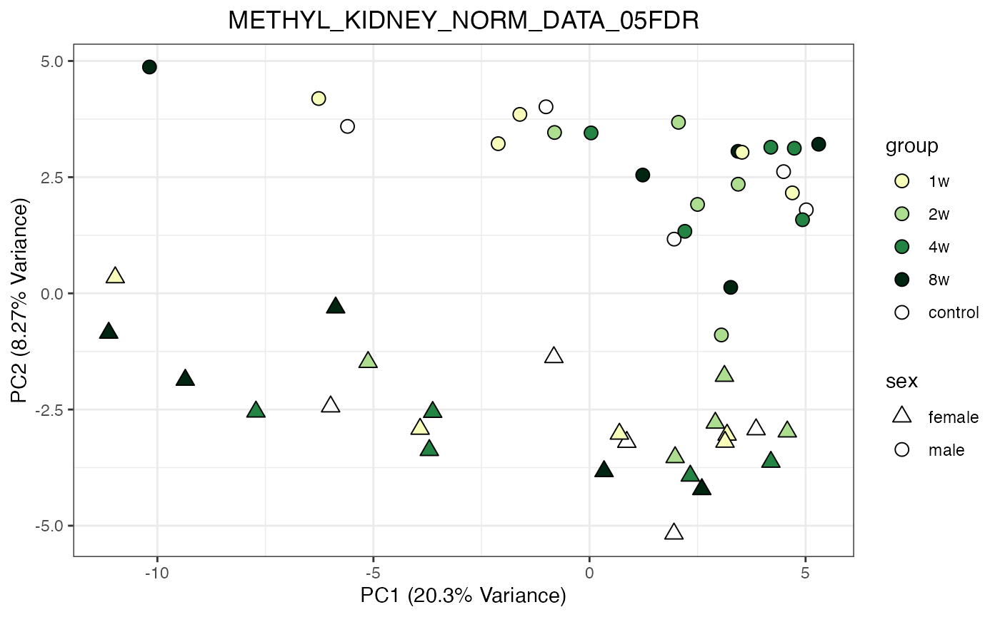
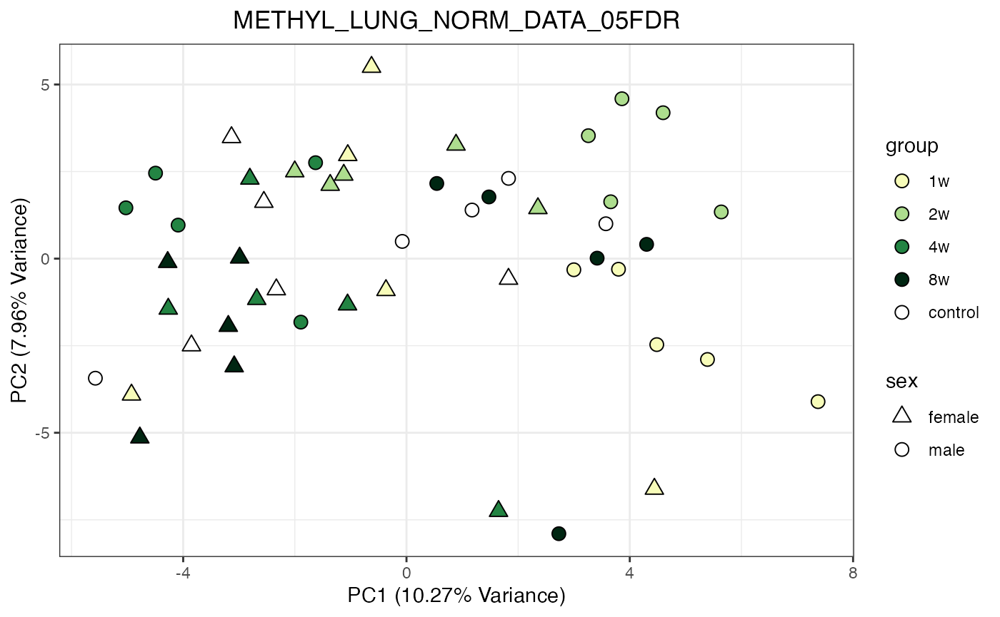
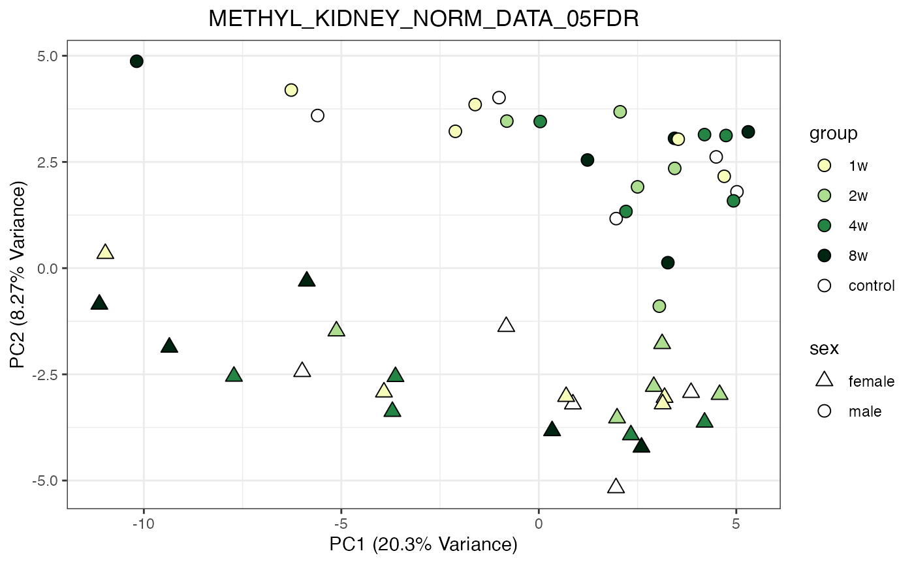
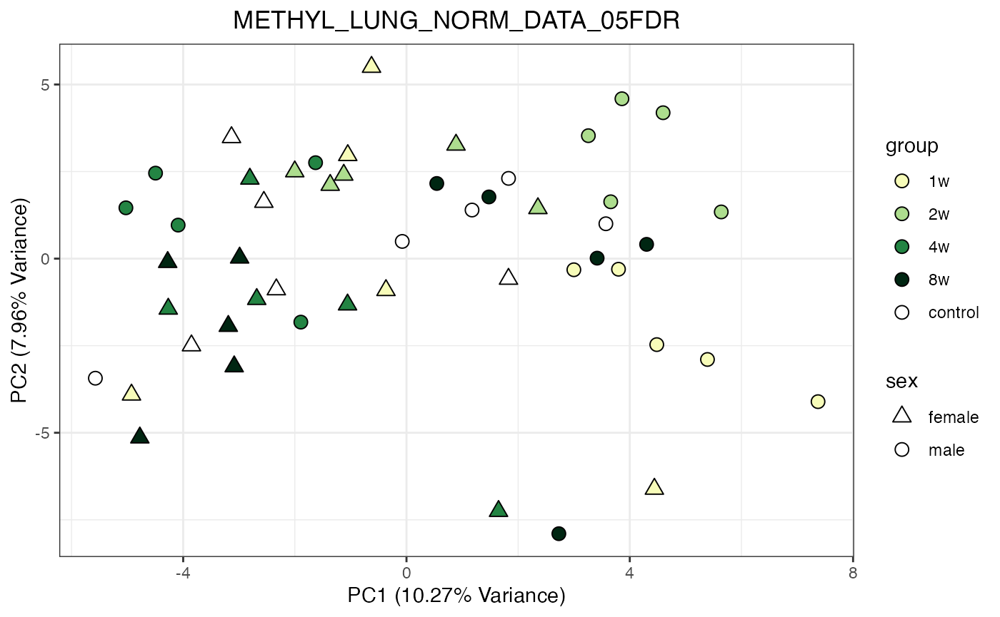

Workshop: MoTrPAC R Packages from the Endurance Training in Young Rats Study
rat-endurance-6m.RmdIntroduction
The Molecular Transducers of Physical Activity Consortium (MoTrPAC) conducted the first comprehensive, organism-wide, multi-omic investigation of endurance exercise training effects in rats. This large-scale study involved six-month-old male and female Fischer 344 rats subjected to progressive treadmill endurance exercise training over 1, 2, 4, or 8 weeks. Tissues were collected from these rats 48 hours after the last exercise bout to capture the adaptations resulting from the training, with sex-matched sedentary, untrained rats serving as controls. Utilizing multiple ‘omic’ platforms including transcriptomics, epigenomics, proteomics, and metabolomics—across a wide range of tissues, the study provides a rich dataset that captures the temporal effects of endurance exercise training at multiple biological levels. This dataset offers invaluable insights into the molecular mechanisms underlying exercise-induced adaptations. Find the open access manuscript published on Nature.
To facilitate access to and analysis of this extensive dataset, two essential R packages have been developed:
- MotrpacRatTraining6moData: Provides access to the processed data and downstream analysis results from the MoTrPAC endurance exercise study.
- MotrpacRatTraining6mo: Offers functions to help retrieve and explore the data, enabling users to perform analyses and reproduce key findings from the study.
In this tutorial, we will explore how to utilize the
MotrpacRatTraining6moData package to access and navigate
the extensive dataset generated by the endurance exercise study, and
employ the MotrpacRatTraining6mo package to perform
analyses and gain insights into the molecular responses to endurance
training in young rats.
Note: This notebook is based on the vignettes available in MotrpacRatTraining6moData and MotrpacRatTraining6mo vignette.
Installations
Install both packages with devtools:
if (!require("devtools", quietly = TRUE)){
install.packages("devtools")
}
options(timeout=1e5) # extend the timeout for downloading large files
# First the data package, which might take a long time
devtools::install_github("MoTrPAC/MotrpacRatTraining6moData")
# Then the analysis package:
devtools::install_github("MoTrPAC/MotrpacRatTraining6mo")Once we install this package, we can load these and other libraries used in this tutorial:
library(MotrpacRatTraining6moData)
library(MotrpacRatTraining6mo)
library(ggplot2) # for plots in this tutorial
library(dplyr)
#>
#> Attaching package: 'dplyr'
#> The following objects are masked from 'package:stats':
#>
#> filter, lag
#> The following objects are masked from 'package:base':
#>
#> intersect, setdiff, setequal, union
library(impute) # For KNN imputation
library(tidyverse)
#> ── Attaching core tidyverse packages ──────────────────────── tidyverse 2.0.0 ──
#> ✔ forcats 1.0.0 ✔ stringr 1.5.1
#> ✔ lubridate 1.9.4 ✔ tibble 3.2.1
#> ✔ purrr 1.0.4 ✔ tidyr 1.3.1
#> ✔ readr 2.1.5
#> ── Conflicts ────────────────────────────────────────── tidyverse_conflicts() ──
#> ✖ dplyr::filter() masks stats::filter()
#> ✖ dplyr::lag() masks stats::lag()
#> ℹ Use the conflicted package (<http://conflicted.r-lib.org/>) to force all conflicts to become errors
library(lubridate)
library(pheatmap)
library(viridis)
#> Loading required package: viridisLiteStudy design: the PHENO data object
Details of the experimental design can be found in the supplementary methods of the Nature paper.
Briefly, 6-month-old young adult rats were subjected to progressive endurance exercise training for 1, 2, 4, or 8 weeks, with tissues collected 48 hours after the last training bout. Sex-matched sedentary, untrained rats were used as controls. Whole blood, plasma, and 18 solid tissues were analyzed using genomics, proteomics, metabolomics, and protein immunoassay technologies, with most assays performed in a subset of these tissues. Depending on the assay, between 3 and 6 replicates per sex per time point were analyzed.
The PHENO object represents phenotypic data from the MoTrPAC endurance exercise training study in six-month-old rats.
Important: The endurance study was conducted at two Preclinical Animal Study Sites (PASS): the University of Iowa and Joslin Diabetes Center. Phenotypic data include animals from both sites; however, omics data were generated only from animals processed at the University of Iowa site to ensure standardization for molecular assays. Samples from animals at the Joslin site were not used for omics analyses but have been preserved and are stored in freezers. It is anticipated that these samples may become available for follow-up endurance exercise studies through future funding opportunities,
The PHENO data object is a comprehensive dataset containing
5,955 rows and 510 variables, with each row
corresponding to a unique sample identified by viallabel.
The dataset captures detailed information on the animals, their training
regimens, specimen collection, and various physiological metrics. Here
is a summary of the major components:
Categories of Variables in the PHENO Dataset
Identifiers: Unique identifiers such as
pid,bid,viallabel, andlabelidare used to link samples to individual animals and their specimen labels.Animal Information: Variables such as
registration.d_birth,registration.sex, andregistration.weightprovide basic details about the rats, including birth date, sex, and weight.Registration and Housing: Data about the arrival, housing conditions, registration (
registration.d_arrive,registration.cagenumber), and light conditions (registration.d_reverselight) are included to document the environmental conditions in which animals were kept.Intervention and Randomization: Information about intervention groups (e.g., control or training) is captured in variables like
key.intervention,key.anirandgroup, andkey.protocol, indicating how each rat was assigned to different treatment conditions.Familiarization and Training Data: Detailed records of treadmill familiarization (
familiarization.d_treadmillbegin) and progressive endurance training are included. Training data cover up to 40 days, with variables for each day’s treadmill speed, incline, and exercise time (training.dayX_treadmillspeed,training.dayX_timeontreadmill).VO2 Max and NMR Testing: Information from VO2 max tests and NMR body composition tests is included. Variables such as
vo2.max.test.vo2_maxandnmr.testing.nmr_fatcapture maximum oxygen uptake, percent body fat, and other key metabolic measures.Specimen Collection: Specimen collection details are provided, including dates (
specimen.collection.d_visit), times of collection (specimen.processing.t_collection), and types of tissues collected (specimen.processing.sampletypedescription).Terminal Measures: Terminal metrics, such as body weight at sacrifice and tissue weights (
terminal.weight.bw,terminal.weight.sol), document the final physical characteristics of the animals after completion of the study.Calculated Variables: Derived variables, such as changes in body composition (
calculated.variables.pct_body_fat_change), lactate levels, andvo2_max, provide insights into physiological adaptations resulting from the exercise intervention.Custom Variables: Variables like
sacrificetime,intervention, andtime_to_freezehave been added for simplified grouping and analysis, reflecting key time points, interventions, and time-to-processing of samples.
Key Variables for Analysis
-
pid: Participant Identifier. A unique 8-digit identifier assigned to each animal subject (rats in this study). All samples (viallabel) coming from the same animal have the samepid. This variable is crucial when combining results from multiple assays with phenotypic data, allowing for animal-specific longitudinal analysis. -
viallabel: Vial Label ID. A unique 11-digit code assigned to each sample vial. This ID is present across all related results and metadata files, serving as a key to link the quantitative results with the phenotypic data. -
sex: Sex of the animal. Represented as"female"for Female and"male". This variable is critical for any analysis that aims to determine sex-based differences. -
group: A simplify version ofstudy_group_timepointthat only includes the group and time points:control(sedentary), and1w,2w,4w, and8w(exercise) -
tissue: tissue name (short)
In summary, the PHENO object provides a comprehensive overview of each animal’s involvement in the study, including the conditions under which they were kept, the specific training they underwent, and the physiological changes observed as a result of the endurance training intervention. This dataset allows for in-depth analysis of the effects of physical activity at various biological levels.
Visualizations of Phenotypes
Animal counts
First, let’s select the ids of the rats used in this study. For that, we will first extract the samples ids, and we’ll map those samples ids to the rats ids.
# Load the proteomics data, for example:
data_prot <- MotrpacRatTraining6mo::combine_normalized_data(
assays = c("PROT","UBIQ","PHOSPHO","ACETYL"),
exclude_outliers = TRUE, )
#> PROT_CORTEX_NORM_DATA
#> PROT_HEART_NORM_DATA
#> PROT_KIDNEY_NORM_DATA
#> PROT_LIVER_NORM_DATA
#> PROT_LUNG_NORM_DATA
#> PROT_SKMGN_NORM_DATA
#> PROT_WATSC_NORM_DATA
#> UBIQ_HEART_NORM_DATA
#> UBIQ_LIVER_NORM_DATA
#> PHOSPHO_CORTEX_NORM_DATA
#> PHOSPHO_HEART_NORM_DATA
#> PHOSPHO_KIDNEY_NORM_DATA
#> PHOSPHO_LIVER_NORM_DATA
#> PHOSPHO_LUNG_NORM_DATA
#> PHOSPHO_SKMGN_NORM_DATA
#> PHOSPHO_WATSC_NORM_DATA
#> ACETYL_HEART_NORM_DATA
#> ACETYL_LIVER_NORM_DATA
# Get the unique pid (rat id) values from the proteomics data
rat_omics <- setdiff(names(data_prot), c("feature", "feature_ID", "tissue", "assay"))Now let’s check the total number of animals in the MoTrPAC study and the number of animals used in the omics data.
# Count unique 'pid' by 'group' and 'sex'
count_data <- PHENO %>%
group_by(group, sex) %>%
summarise(unique_pid_count = n_distinct(pid),
.groups = 'drop') %>%
ungroup()
# Animals used in this study
p1 <- ggplot(count_data,
aes(x = group, y = unique_pid_count, fill = sex)) +
geom_bar(stat = "identity",
position = position_dodge(width = 0.8),
width = 0.7,
color = "black") +
geom_text(aes(label = unique_pid_count),
position = position_dodge(width = 0.8),
hjust = -0.3,
size = 3) +
scale_y_continuous(expand = expansion(mult = c(0, 0.1))) +
labs(title = "Animal Count",
subtitle = "All animals processed at the Animal Site",
x = "Study Group Time Point",
y = "Unique Animals (pid)",
fill = "Sex") +
coord_flip() +
theme_linedraw() +
theme(
plot.title = element_text(face = "bold", size = 14),
plot.subtitle = element_text(size = 11),
axis.text = element_text(size = 10),
axis.title = element_text(size = 11),
legend.position = "top",
legend.title = element_text(face = "bold"),
panel.grid.major.y = element_blank(),
panel.grid.minor = element_blank()
) +
scale_fill_manual(
values = c(
female = "#FFB6C1",
male = "#1F77B4"))
print(p1)
# Filter by pid (i.e., the animal id)
count_data <- PHENO %>%
filter(pid %in% rat_omics) %>%
group_by(group, sex) %>%
summarise(unique_pid_count = n_distinct(pid),
.groups = 'drop') %>%
ungroup()
# Create the grouped bar chart
p2 <- ggplot(count_data,
aes(x = group, y = unique_pid_count, fill = sex)) +
geom_bar(stat = "identity",
position = position_dodge(width = 0.8),
width = 0.7,
color = "black") +
geom_text(aes(label = unique_pid_count),
position = position_dodge(width = 0.8),
hjust = -0.3,
size = 3) +
scale_y_continuous(expand = expansion(mult = c(0, 0.1))) +
labs(title = "Animal Count",
subtitle = "Only animals used for molecular profile",
x = "Study Group Time Point",
y = "Unique Animals (pid)",
fill = "Sex") +
coord_flip() +
theme_linedraw() +
theme(
plot.title = element_text(face = "bold", size = 14),
plot.subtitle = element_text(size = 11),
axis.text = element_text(size = 10),
axis.title = element_text(size = 11),
legend.position = "top",
legend.title = element_text(face = "bold"),
panel.grid.major.y = element_blank(),
panel.grid.minor = element_blank()
) +
scale_fill_manual(
values = c(
female = "#FFB6C1",
male = "#1F77B4"))
print(p2)Sample counts by tissue
# Count total number of unique 'viallabel' by 'tissue'
library(ggplot2)
viallabel_data <- PHENO %>%
dplyr::filter(
!is.na(tissue), # drop NA tissues
pid %in% rat_omics # only include animals used in the omics data
) %>%
dplyr::group_by(tissue, group) %>%
dplyr::summarise(
total_viallabel_count = n_distinct(viallabel),
.groups = "drop"
) %>%
dplyr::ungroup() %>%
dplyr::mutate(
tissue = forcats::fct_reorder(tissue, total_viallabel_count, .fun = sum)
)
p <- ggplot(viallabel_data,
aes(x = tissue,
y = total_viallabel_count,
fill = group)) +
geom_col(position = position_dodge(width = 0.8),
width = 0.7,
color = "black") +
geom_text(aes(label = total_viallabel_count),
position = position_dodge(width = 0.8),
hjust = -0.1,
size = 2) +
scale_y_continuous(expand = expansion(mult = c(0, 0.1))) +
labs(title = "Vial-label Count by Tissue & Group",
x = "Tissue",
y = "Distinct Vial-labels",
fill = "Group") +
coord_flip() +
theme_minimal() +
theme(
plot.title = element_text(face = "bold"),
axis.title = element_text(size = 11),
panel.grid.major.y = element_blank(),
legend.position = "top"
)
print(p)
Weight distributions
# Select variables from PHENO that start with "training" and end with "_weight"
weight_cols <- grep("^training.*_weight$", names(PHENO), value = TRUE)
# Select those columns along with "pid", "sex", and "group"
selected_cols <- c("pid", "sex", "group", weight_cols)
# Get unique values
unique_pheno <- unique(PHENO[, selected_cols])
# Reshape data to long format for plotting
pheno_long <- unique_pheno %>%
dplyr::filter(pid %in% rat_omics) %>%
tidyr::pivot_longer(cols = starts_with("training"), names_to = "training_session", values_to = "weight")
# Define the desired order of training sessions
training_session_order <- c("training.day1_weight",
"training.day6_weight",
"training.day11_weight",
"training.day16_weight",
"training.day21_weight",
"training.day26_weight",
"training.day31_weight",
"training.day36_weight")
# Convert training_session to a factor with the specified order
pheno_long$training_session <- factor(pheno_long$training_session,
levels = training_session_order)
# Plot the jittered plot for each training session, faceted by sex and colored by group
p1 <- ggplot(pheno_long, aes(x = training_session, y = weight, color = group)) +
geom_jitter(width = 0.2, size = 2, alpha = 0.6, na.rm = TRUE) +
facet_wrap(~sex) +
theme_bw() +
labs(title = "Weight by Training Session",
x = "Training Session",
y = "Weight") +
theme(axis.text.x = element_text(angle = 45, hjust = 1))
print(p1)
p2 <- ggplot(pheno_long, aes(x = training_session, y = weight, color = group)) +
geom_boxplot(alpha = 0.3, outlier.shape = NA, na.rm = TRUE, linewidth = 0.5) +
facet_wrap(~sex, scales = "free") +
theme_bw() +
labs(title = "Weight by Training Session",
x = "Training Session",
y = "Weight") +
theme(axis.text.x = element_text(angle = 45, hjust = 1))
print(p2)
p3 <- ggplot(pheno_long, aes(x = training_session, y = weight, group = group, color = group, fill = group)) +
stat_summary(fun = median, geom = "point", size = 4, shape = 21, alpha = 0.7, na.rm = TRUE) +
stat_summary(fun = median, geom = "line", size = 1, alpha = 0.7, na.rm = TRUE) +
facet_wrap(~sex, scales = "free") +
theme_linedraw() +
labs(title = "Mean Weight by Training Session",
x = "Training Session",
y = "Mean Weight") +
theme(axis.text.x = element_text(angle = 45, hjust = 1))
#> Warning: Using `size` aesthetic for lines was deprecated in ggplot2 3.4.0.
#> ℹ Please use `linewidth` instead.
#> This warning is displayed once every 8 hours.
#> Call `lifecycle::last_lifecycle_warnings()` to see where this warning was
#> generated.
print(p3)VO2max
VO2max measurements were taken at the start for all time points, and at the end for the 4-week, 8-week, and control training sessions.
# colnames(PHENO)[grep("vo2*d_visit", colnames(PHENO))]
# Select those columns along with "pid", "sex", and "group"
selected_cols <- c("pid",
"sex",
"group",
"vo2.max.test.vo2_max_1",
"vo2.max.test.vo2_max_2")
# Get unique values
unique_pheno <- unique(PHENO[, selected_cols])
# Reshape data to long format for plotting
pheno_long <- unique_pheno %>%
dplyr::filter(pid %in% rat_omics) %>%
tidyr::pivot_longer(cols = starts_with("vo2"),
names_to = "training_session",
values_to = "vo2max")
p1 <- ggplot(pheno_long,
aes(x = training_session, y = vo2max, color = group)) +
geom_boxplot(alpha = 0.3, outlier.shape = NA, na.rm = TRUE) +
# geom_jitter(width = 0.2, size = 2, alpha = 0.6, na.rm = TRUE) +
facet_wrap(~sex, scales = "free") +
theme_bw() +
labs(title = "VO2max distributions at first and last training session",
x = "Training Session",
y = "VO2max") +
theme(axis.text.x = element_text(angle = 45, hjust = 1))
print(p1)
p2 <- ggplot(pheno_long, aes(x = training_session, y = vo2max, group = group, color = group, fill = group)) +
stat_summary(fun = mean, geom = "point", size = 4, shape = 21, alpha = 0.7, na.rm = TRUE) +
stat_summary(fun = mean, geom = "line", size = 1, alpha = 0.7, na.rm = TRUE) +
facet_wrap(~sex) +
theme_linedraw() +
labs(title = "Mean VO2max at first and last training session",
x = "Training Session",
y = "Mean VO2max") +
theme(axis.text.x = element_text(angle = 45, hjust = 1))
print(p2)Treadmill speed over time
# Filter the data for training rats
PHENO_training <- PHENO %>%
filter(intervention == "training")
# Pivot the date columns
PHENO_long_date <- PHENO_training %>%
select(pid, group, matches("training\\.day\\d+date$")) %>%
pivot_longer(
cols = -c(pid, group),
names_to = "day",
names_pattern = "training\\.day(\\d+)date$",
values_to = "date"
) %>%
mutate(
day = as.integer(day),
date = dmy(date)
)
# Pivot the treadmillspeed columns
PHENO_long_speed <- PHENO_training %>%
select(pid, group, matches("training\\.day\\d+_treadmillspeed$")) %>%
pivot_longer(
cols = -c(pid, group),
names_to = "day",
names_pattern = "training\\.day(\\d+)_treadmillspeed$",
values_to = "treadmillspeed"
) %>%
mutate(
day = as.integer(day),
treadmillspeed = as.numeric(treadmillspeed)
)
# Merge the two datasets
PHENO_long <- suppressWarnings(left_join(PHENO_long_date, PHENO_long_speed, by = c("pid", "group", "day")) %>% distinct())
# Remove rows where both 'date' and 'treadmillspeed' are NA
PHENO_long <- PHENO_long %>%
filter(!(is.na(date) & is.na(treadmillspeed)))
# Create a new Id combining group and pid
PHENO_long <- PHENO_long %>%
mutate(group_pid = paste0(group, "_", pid))
# # Identify duplicates
# duplicates <- PHENO_long %>%
# select(group_pid, date, treadmillspeed) %>%
# group_by(group_pid, date) %>%
# filter(n() > 1)
#
# # View duplicates
# print(duplicates)
# Reshape the data to wide format
PHENO_wide <- PHENO_long %>%
pivot_wider(
names_from = date,
values_from = treadmillspeed
)
# Aggregate duplicates by taking the mean of treadmillspeed
PHENO_long <- PHENO_long %>%
group_by(group_pid, date) %>%
summarise(
treadmillspeed = mean(treadmillspeed, na.rm = TRUE),
.groups = 'drop'
)
# Reshape the data to wide format
PHENO_wide <- PHENO_long %>%
pivot_wider(
names_from = date,
values_from = treadmillspeed
)
# Convert the data frame to a matrix
PHENO_matrix <- PHENO_wide %>%
column_to_rownames(var = "group_pid") %>%
as.matrix()
# Replace NA values with zeros
PHENO_matrix[is.na(PHENO_matrix)] <- 0
# Create the heatmap
pheatmap(
PHENO_matrix,
cluster_rows = FALSE,
cluster_cols = FALSE,
show_rownames = TRUE,
show_colnames = TRUE,
scale = "none",
fontsize_row = 4,
fontsize_col = 4,
angle_col = 45,
color = viridis::viridis(100),
main = "Treadmill Speed Over Time for Training Rats"
)DATA
Tip: To learn more about any data object, use
? to retrieve the documentation, e.g.,
?METAB_FEATURE_ID_MAP. Note that
MotrpacRatTraining6moData must be installed and loaded with
library() for this to work.
Tissue and assay abbreviations
It is important to be aware of the tissue and assay abbreviations
because they are used to name many data objects. The vectors of
abbreviations are also available in TISSUE_ABBREV and
ASSAY_ABBREV.
Tissues
- ADRNL: adrenal gland
- BAT: brown adipose tissue
- BLOOD: whole blood
- COLON: colon
- CORTEX: cerebral cortex
- HEART: heart
- HIPPOC: hippocampus
- HYPOTH: hypothalamus
- KIDNEY: kidney
- LIVER: liver
- LUNG: lung
- OVARY: ovaries (female gonads)
- PLASMA: plasma from blood
- SKM-GN: gastrocnemius (leg skeletal muscle)
- SKM-VL: vastus lateralis (leg skeletal muscle)
- SMLINT: small intestine
- SPLEEN: spleen
- TESTES: testes (male gonads)
- VENACV: vena cava
- WAT-SC: subcutaneous white adipose tissue
Assays/omes
- ACETYL: acetylproteomics; protein site acetylation
- ATAC: chromatin accessibility, ATAC-seq data
- IMMUNO: multiplexed immunoassays (cytokines and hormones)
- METAB: metabolomics and lipidomics
- METHYL: DNA methylation, RRBS data
- PHOSPHO: phosphoproteomics; protein site phosphorylation
- PROT: global proteomics; protein abundance
- TRNSCRPT: transcriptomics, RNA-Seq data
- UBIQ: ubiquitylome; protein site ubiquitination
Summary of data
Here is a brief summary of the kinds of data included in the data package:
- Assay, tissue, sex, and training group abbreviations, codes, colors, and order used in plots
- Phenotypic data,
PHENO - Mapping between various feature identifiers, i.e.,
FEATURE_TO_GENE,RAT_TO_HUMAN_GENE - Ome-specific feature annotation, i.e.,
METAB_FEATURE_ID_MAP,METHYL_FEATURE_ANNOT(GCP only),ATAC_FEATURE_ANNOT(GCP only),PROT_FEATURE_ANNOT(GCP only),PHOSPHO_FEATURE_ANNOT(GCP only),UBIQ_FEATURE_ANNOT(GCP only),ACETYL_FEATURE_ANNOT(GCP only),TRNSCRPT_FEATURE_ANNOT(GCP only) - Ome-specific sample-level metadata, i.e.,
TRNSCRPT_META,ATAC_META,METHYL_META,IMMUNO_META,PHOSPHO_META,PROT_META,ACETYL_META,UBIQ_META - Raw counts for RNA-Seq (TRNSCRPT), ATAC-Seq (ATAC), and RRBS
(METHYL) data, e.g.,
TRNSCRPT_LIVER_RAW_COUNTS. Note that epigenetic data (ATAC and METHYL) must be downloaded from Google Cloud Storage. See more details here. - Normalized sample-level data, e.g.,
TRNSCRPT_SKMGN_NORM_DATA - Differential analysis results, e.g.,
HEART_PROT_DA - Sample outliers excluded from differential analysis,
OUTLIERS - Table of training-regulated features at 5% FDR,
TRAINING_REGULATED_FEATURES - Bayesian graphical analysis inputs and results
- Pathway enrichment of main graphical clusters,
GRAPH_PW_ENRICH
A list of all the available data objects and a brief description are available here.
Samples used in this study
# List all data objects in the package
all_objects <- data(package = "MotrpacRatTraining6moData")$results[, "Item"]
# Filter the objects that contain the string "NORM" and exclude specific unwanted objects
exclude_objects <- c("IMMUNO_NORM_DATA_FLAT", "IMMUNO_NORM_DATA_NESTED",
"METAB_NORM_DATA_FLAT", "METAB_NORM_DATA_NESTED",
"TRAINING_REGULATED_NORM_DATA", "TRAINING_REGULATED_NORM_DATA_NO_OUTLIERS")
norm_objects <- all_objects[grepl("NORM_DATA", all_objects) & !(all_objects %in% exclude_objects)]Metabolomics summaries
MoTrPAC run multiple Metabolomics assays, both Targeted and Untargeted. Let’s summarize the data and visualize the metabolite counts across all tissues and datasets.
Metabolite count
Individual platforms
# Calculate the unique feature counts per dataset
feature_counts <- METAB_NORM_DATA_FLAT %>%
group_by(dataset) %>% # Group only by dataset
summarise(unique_feature_count = n_distinct(feature_ID), .groups = "drop") %>%
arrange(desc(unique_feature_count))
# Create the bar plot
p <- ggplot(feature_counts, aes(x = reorder(dataset, unique_feature_count), y = unique_feature_count, fill = dataset)) +
geom_bar(stat = "identity") +
geom_text(aes(label = unique_feature_count),
hjust = -0.1,
size = 3.5) +
labs(title = "Total number of Metabolites by Platform",
caption = "Across all tissues",
x = "",
y = "Metabolite count") +
theme_minimal() +
coord_flip() + # Flip coordinates for better readability
theme(axis.text.x = element_text(angle = 0, hjust = 0.5),
legend.position = "none", # Hide legend for dataset colors
plot.title = element_text(hjust = 0.5, face = "bold", size = 14))
# Print the plot
print(p)Combining all platforms
# Add metab_type based on dataset
METAB_NORM_DATA_FLAT <- METAB_NORM_DATA_FLAT %>%
dplyr::mutate(
metab_type = ifelse(grepl("-t-", dataset), "targeted", "untargeted")
)
# Count the number of feature_ID for each dataset, tissue, and metab_type
feature_counts <- METAB_NORM_DATA_FLAT %>%
dplyr::group_by(dataset, tissue, metab_type) %>%
dplyr::summarise(feature_count = n_distinct(feature_ID), .groups = "drop")
# Plot the results with facets for metab_type
ggplot(feature_counts, aes(x = tissue, y = feature_count, fill = dataset)) +
geom_bar(stat = "identity", position = "dodge") +
theme_minimal() +
labs(
title = "Number of metabolites by Dataset, Tissue, and Metab Type",
x = "Tissue",
y = "Feature Count",
fill = "Dataset"
) +
theme(axis.text.x = element_text(angle = 45, hjust = 1)) +
facet_wrap(~ metab_type, ncol = 1)Details by Targeted and Untargeted
feature_counts_complete <- feature_counts %>%
tidyr::complete(tissue, dataset, metab_type, fill = list(feature_count = 0))
# Loop over metab_type and create a plot for each
for (type in unique(feature_counts_complete$metab_type)) {
# Filter for the current metab_type and its datasets
type_data <- feature_counts_complete %>%
dplyr::filter(metab_type == type) %>%
dplyr::filter(if (type == "targeted") grepl("-t-", dataset) else !grepl("-t-", dataset))
# Create the plot
plot <- ggplot(type_data, aes(x = tissue, y = feature_count, fill = dataset)) +
geom_bar(stat = "identity", position = position_dodge(width = 0.8), color = "black") +
theme_bw() +
labs(
title = paste("Metabolite Count by Dataset and Tissue (", type, ")", sep = ""),
x = "Tissue",
y = "Metabolite Count",
fill = "Metabolomics Assay"
) +
theme(
axis.text.x = element_text(angle = 0, size = 10),
axis.text.y = element_text(size = 10),
axis.title.x = element_text(size = 12, face = "bold"),
axis.title.y = element_text(size = 12, face = "bold"),
plot.title = element_text(size = 14, face = "bold", hjust = 0.5),
panel.grid.major.x = element_blank(),
panel.grid.major.y = element_line(color = "gray", linetype = "dotted"),
panel.border = element_rect(color = "black", fill = NA, size = 1)
) +
scale_x_discrete(expand = c(0.05, 0.05)) +
scale_fill_brewer(palette = "Set3") +
coord_flip()
# Print the plot
print(plot)
}
#> Warning: The `size` argument of `element_rect()` is deprecated as of ggplot2 3.4.0.
#> ℹ Please use the `linewidth` argument instead.
#> This warning is displayed once every 8 hours.
#> Call `lifecycle::last_lifecycle_warnings()` to see where this warning was
#> generated.
 Total counts by tissue
Total counts by tissue
# Ensure all combinations of tissue and dataset exist, but separately for each metab_type
feature_counts_complete <- feature_counts %>%
tidyr::complete(tissue, dataset, metab_type, fill = list(feature_count = 0))
# Loop over metab_type and create a plot for each
for (type in unique(feature_counts_complete$metab_type)) {
# Filter for the current metab_type and its datasets
type_data <- feature_counts_complete %>%
dplyr::filter(metab_type == type) %>%
dplyr::filter(if (type == "targeted") grepl("-t-", dataset) else !grepl("-t-", dataset))
# Create the plot
plot <- ggplot(type_data, aes(x = tissue, y = feature_count, fill = dataset)) +
geom_bar(stat = "identity", position = "stack", color = "black") +
theme_bw() +
labs(
title = paste("Metabolite Count by Dataset and Tissue (", type, ")", sep = ""),
x = "Tissue",
y = "Metabolite Count",
fill = "Metabolomics Assay"
) +
theme(
axis.text.x = element_text(angle = 0, size = 10),
axis.text.y = element_text(size = 10),
axis.title.x = element_text(size = 12, face = "bold"),
axis.title.y = element_text(size = 12, face = "bold"),
plot.title = element_text(size = 14, face = "bold", hjust = 0.5),
panel.grid.major.x = element_blank(),
panel.grid.major.y = element_line(color = "gray", linetype = "dotted"),
panel.border = element_rect(color = "black", fill = NA, size = 1)
) +
scale_x_discrete(expand = c(0.05, 0.05)) +
scale_fill_brewer(palette = "Set3") +
coord_flip()
# Print the plot
print(plot)
} Total counts by targeted and untargeted
# Summarize the feature counts for each tissue and metab_type
feature_counts_summary <- feature_counts %>%
dplyr::group_by(tissue, metab_type) %>%
dplyr::summarise(total_features = sum(feature_count), .groups = "drop")
# Create the combined stacked bar plot
ggplot(feature_counts_summary, aes(x = tissue, y = total_features, fill = metab_type)) +
geom_bar(stat = "identity", position = "stack", color = "black") +
theme_light() +
labs(
title = "Metabolite Counts by Tissue (Targeted & Untargeted)",
x = "Tissue",
y = "Total Feature Count",
fill = "Metabolomics Type"
) +
theme(
axis.text.x = element_text(angle = 45, hjust = 1, vjust = 1, size = 10),
axis.text.y = element_text(size = 10),
axis.title.x = element_text(size = 12, face = "bold"),
axis.title.y = element_text(size = 12, face = "bold"),
plot.title = element_text(size = 14, face = "bold", hjust = 0.5),
panel.grid.major.x = element_blank(),
panel.grid.major.y = element_line(color = "gray", linetype = "dotted"),
panel.border = element_rect(color = "black", fill = NA, size = 1),
legend.position = "right"
) +
scale_fill_manual(values = c("targeted" = "steelblue", "untargeted" = "coral")) + coord_flip()Metabolite Overlap between features
library(UpSetR)
# Prepare the data for the UpSet plot
# Ensure there is one entry per feature_ID and dataset
upset_data <- METAB_NORM_DATA_FLAT %>%
dplyr::select(feature_ID, dataset) %>%
dplyr::distinct() %>% # Remove duplicates
dplyr::mutate(value = 1) %>% # Add a value column to indicate presence
tidyr::pivot_wider(names_from = dataset, values_from = value, values_fill = list(value = 0)) %>%
as.data.frame()
# Convert to the format suitable for UpSetR
upset_input <- upset_data[, -1] # Remove the feature_ID column
# Generate the UpSet plot
upset(
upset_input,
sets = colnames(upset_input),
sets.bar.color = "skyblue",
main.bar.color = "black",
matrix.color = "blue",
text.scale = c(1, 1, 1, 1.5, 1, 1.5),
order.by = "freq",
keep.order = TRUE
)Load the data
Use load_sample_data() to load sample-level data for a
specific ome and tissue. Here we fetch various forms of the sample-level
RNA-Seq (TRNSCRPT) data for brown adipose tissue (BAT) as an
example.
# Load RNA-seq raw counts for brown adipose tissue
data <- load_sample_data("BAT", "TRNSCRPT", normalized = FALSE)
# Load the normalized RNA-seq data for brown adipose tissue instead
data <- load_sample_data("BAT", "TRNSCRPT")
# Load the normalized RNA-seq data for brown adipose tissue, but exclude sample outliers
data <- load_sample_data("BAT", "TRNSCRPT", exclude_outliers = TRUE)
# Load the normalized RNA-seq data for brown adipose tissue for training-regulated features only
data <- load_sample_data("BAT", "TRNSCRPT", training_regulated_only = TRUE)load_sample_data() will tell you if the specified
dataset doesn’t exist.
data = load_sample_data("VENACV", "PROT")
#> Warning in load_sample_data("VENACV", "PROT"): No data returned for tissue
#> VENACV and assay PROT with current arguments.load_sample_data() will also download epigenetic data
from Google Cloud Storage.
Note: Epigenetic data require substantially more memory than other omes.
# Load ATAC-seq raw counts for hippocampus, excluding outliers
data = load_sample_data("HIPPOC",
"ATAC",
exclude_outliers = TRUE,
normalized = FALSE,
scratchdir = "/tmp")We can plot the normalized sample-level data for a single feature
using plot_feature_normalized_data(). All of the following
examples are different ways to plot the same feature.
plot_feature_normalized_data(feature = "PROT;SKM-GN;NP_786937.1",
add_gene_symbol = TRUE)
# Two different ways to plot the same results for one feature
plot_feature_normalized_data(feature = "PROT;SKM-GN;NP_786937.1",
exclude_outliers = TRUE,
scale_x_by_time = FALSE)
plot_feature_normalized_data(assay = "PROT",
tissue = "SKM-GN",
feature_ID = "NP_786937.1",
exclude_outliers = TRUE,
scale_x_by_time = FALSE)
plot_feature_normalized_data(assay = "PROT",
tissue = "SKM-GN",
feature_ID = "NP_786937.1",
facet_by_sex = TRUE)combine_normalized_data() is a wrapper for
load_sample_data() that returns combined sample-level
normalized data for multiple datasets. Note that the sample-specific
vial labels used as column names for most of the sample-level data are
replaced with rat-specific participant IDs (PIDs) to allow measurements
from multiple datasets for the same animal to be concatenated.
# Return all normalized RNA-seq data
data_tra <- combine_normalized_data(assays = "TRNSCRPT")
# Return all normalized proteomics data. Exclude outliers
data_prot <- combine_normalized_data(assays = c("PROT","UBIQ","PHOSPHO","ACETYL"),
exclude_outliers = TRUE)
ratid_tra <- setdiff(names(data_tra), c("feature", "feature_ID", "tissue", "assay"))
ratid_prot <- setdiff(names(data_prot), c("feature", "feature_ID", "tissue", "assay"))
# Return normalized ATAC-seq data for training-regulated features
data <- combine_normalized_data(assays = "ATAC",
training_regulated_only = TRUE)
# Return all non-epigenetic data
# Note that the "include_epigen" argument is FALSE by default
data <- combine_normalized_data()Similarly, combine_da_results() concatenates
differential analysis results for multiple datasets.
# Return all non-epigenetic differential analysis results,
# including meta-regression results for metabolomics
res <- combine_da_results()
# Return METHYL and ATAC differential analysis results for gastrocnemius
# res = combine_da_results(tissues="SKM-GN",
# assays=c("ATAC","METHYL"),
# include_epigen=TRUE)Finally, list_available_data() returns a list of all of
the available data objects in the specified package.
list_available_data("MotrpacRatTraining6moData")
#> [1] "ACETYL_HEART_DA"
#> [2] "ACETYL_HEART_NORM_DATA"
#> [3] "ACETYL_LIVER_DA"
#> [4] "ACETYL_LIVER_NORM_DATA"
#> [5] "ACETYL_META"
#> [6] "ASSAY_ABBREV"
#> [7] "ASSAY_ABBREV_TO_CODE"
#> [8] "ASSAY_CODE_TO_ABBREV"
#> [9] "ASSAY_COLORS"
#> [10] "ASSAY_ORDER"
#> [11] "ATAC_BAT_NORM_DATA_05FDR"
#> [12] "ATAC_HEART_NORM_DATA_05FDR"
#> [13] "ATAC_HIPPOC_NORM_DATA_05FDR"
#> [14] "ATAC_KIDNEY_NORM_DATA_05FDR"
#> [15] "ATAC_LIVER_NORM_DATA_05FDR"
#> [16] "ATAC_LUNG_NORM_DATA_05FDR"
#> [17] "ATAC_META"
#> [18] "ATAC_SKMGN_NORM_DATA_05FDR"
#> [19] "ATAC_WATSC_NORM_DATA_05FDR"
#> [20] "FEATURE_TO_GENE"
#> [21] "FEATURE_TO_GENE_FILT"
#> [22] "GENE_UNIVERSES"
#> [23] "GRAPH_COMPONENTS"
#> [24] "GRAPH_PW_ENRICH"
#> [25] "GRAPH_STATES"
#> [26] "GROUP_COLORS"
#> [27] "IMMUNO_ADRNL_DA"
#> [28] "IMMUNO_BAT_DA"
#> [29] "IMMUNO_COLON_DA"
#> [30] "IMMUNO_CORTEX_DA"
#> [31] "IMMUNO_HEART_DA"
#> [32] "IMMUNO_HIPPOC_DA"
#> [33] "IMMUNO_KIDNEY_DA"
#> [34] "IMMUNO_LIVER_DA"
#> [35] "IMMUNO_LUNG_DA"
#> [36] "IMMUNO_META"
#> [37] "IMMUNO_NORM_DATA_FLAT"
#> [38] "IMMUNO_NORM_DATA_NESTED"
#> [39] "IMMUNO_OVARY_DA"
#> [40] "IMMUNO_PLASMA_DA"
#> [41] "IMMUNO_SKMGN_DA"
#> [42] "IMMUNO_SKMVL_DA"
#> [43] "IMMUNO_SMLINT_DA"
#> [44] "IMMUNO_SPLEEN_DA"
#> [45] "IMMUNO_TESTES_DA"
#> [46] "IMMUNO_WATSC_DA"
#> [47] "METAB_ADRNL_DA"
#> [48] "METAB_ADRNL_DA_METAREG"
#> [49] "METAB_BAT_DA"
#> [50] "METAB_BAT_DA_METAREG"
#> [51] "METAB_COLON_DA"
#> [52] "METAB_COLON_DA_METAREG"
#> [53] "METAB_CORTEX_DA"
#> [54] "METAB_CORTEX_DA_METAREG"
#> [55] "METAB_FEATURE_ID_MAP"
#> [56] "METAB_HEART_DA"
#> [57] "METAB_HEART_DA_METAREG"
#> [58] "METAB_HIPPOC_DA"
#> [59] "METAB_HIPPOC_DA_METAREG"
#> [60] "METAB_HYPOTH_DA"
#> [61] "METAB_HYPOTH_DA_METAREG"
#> [62] "METAB_KIDNEY_DA"
#> [63] "METAB_KIDNEY_DA_METAREG"
#> [64] "METAB_LIVER_DA"
#> [65] "METAB_LIVER_DA_METAREG"
#> [66] "METAB_LUNG_DA"
#> [67] "METAB_LUNG_DA_METAREG"
#> [68] "METAB_NORM_DATA_FLAT"
#> [69] "METAB_NORM_DATA_NESTED"
#> [70] "METAB_OVARY_DA"
#> [71] "METAB_OVARY_DA_METAREG"
#> [72] "METAB_PLASMA_DA"
#> [73] "METAB_PLASMA_DA_METAREG"
#> [74] "METAB_SKMGN_DA"
#> [75] "METAB_SKMGN_DA_METAREG"
#> [76] "METAB_SKMVL_DA"
#> [77] "METAB_SKMVL_DA_METAREG"
#> [78] "METAB_SMLINT_DA"
#> [79] "METAB_SMLINT_DA_METAREG"
#> [80] "METAB_SPLEEN_DA"
#> [81] "METAB_SPLEEN_DA_METAREG"
#> [82] "METAB_TESTES_DA"
#> [83] "METAB_TESTES_DA_METAREG"
#> [84] "METAB_VENACV_DA"
#> [85] "METAB_VENACV_DA_METAREG"
#> [86] "METAB_WATSC_DA"
#> [87] "METAB_WATSC_DA_METAREG"
#> [88] "METHYL_BAT_NORM_DATA_05FDR"
#> [89] "METHYL_HEART_NORM_DATA_05FDR"
#> [90] "METHYL_HIPPOC_NORM_DATA_05FDR"
#> [91] "METHYL_KIDNEY_NORM_DATA_05FDR"
#> [92] "METHYL_LIVER_NORM_DATA_05FDR"
#> [93] "METHYL_LUNG_NORM_DATA_05FDR"
#> [94] "METHYL_META"
#> [95] "METHYL_SKMGN_NORM_DATA_05FDR"
#> [96] "METHYL_WATSC_NORM_DATA_05FDR"
#> [97] "OUTLIERS"
#> [98] "PATHWAY_PARENTS"
#> [99] "PHENO"
#> [100] "PHOSPHO_CORTEX_DA"
#> [101] "PHOSPHO_CORTEX_NORM_DATA"
#> [102] "PHOSPHO_HEART_DA"
#> [103] "PHOSPHO_HEART_NORM_DATA"
#> [104] "PHOSPHO_KIDNEY_DA"
#> [105] "PHOSPHO_KIDNEY_NORM_DATA"
#> [106] "PHOSPHO_LIVER_DA"
#> [107] "PHOSPHO_LIVER_NORM_DATA"
#> [108] "PHOSPHO_LUNG_DA"
#> [109] "PHOSPHO_LUNG_NORM_DATA"
#> [110] "PHOSPHO_META"
#> [111] "PHOSPHO_SKMGN_DA"
#> [112] "PHOSPHO_SKMGN_NORM_DATA"
#> [113] "PHOSPHO_WATSC_DA"
#> [114] "PHOSPHO_WATSC_NORM_DATA"
#> [115] "PROT_CORTEX_DA"
#> [116] "PROT_CORTEX_NORM_DATA"
#> [117] "PROT_HEART_DA"
#> [118] "PROT_HEART_NORM_DATA"
#> [119] "PROT_KIDNEY_DA"
#> [120] "PROT_KIDNEY_NORM_DATA"
#> [121] "PROT_LIVER_DA"
#> [122] "PROT_LIVER_NORM_DATA"
#> [123] "PROT_LUNG_DA"
#> [124] "PROT_LUNG_NORM_DATA"
#> [125] "PROT_META"
#> [126] "PROT_SKMGN_DA"
#> [127] "PROT_SKMGN_NORM_DATA"
#> [128] "PROT_WATSC_DA"
#> [129] "PROT_WATSC_NORM_DATA"
#> [130] "RAT_TO_HUMAN_GENE"
#> [131] "RAT_TO_HUMAN_PHOSPHO"
#> [132] "REPEATED_FEATURES"
#> [133] "REPFDR_INPUTS"
#> [134] "REPFDR_RES"
#> [135] "SEX_COLORS"
#> [136] "TISSUE_ABBREV"
#> [137] "TISSUE_ABBREV_TO_CODE"
#> [138] "TISSUE_CODE_TO_ABBREV"
#> [139] "TISSUE_COLORS"
#> [140] "TISSUE_ORDER"
#> [141] "TRAINING_REGULATED_FEATURES"
#> [142] "TRAINING_REGULATED_NORM_DATA"
#> [143] "TRAINING_REGULATED_NORM_DATA_NO_OUTLIERS"
#> [144] "TRNSCRPT_ADRNL_DA"
#> [145] "TRNSCRPT_ADRNL_NORM_DATA"
#> [146] "TRNSCRPT_ADRNL_RAW_COUNTS"
#> [147] "TRNSCRPT_BAT_DA"
#> [148] "TRNSCRPT_BAT_NORM_DATA"
#> [149] "TRNSCRPT_BAT_RAW_COUNTS"
#> [150] "TRNSCRPT_BLOOD_DA"
#> [151] "TRNSCRPT_BLOOD_NORM_DATA"
#> [152] "TRNSCRPT_BLOOD_RAW_COUNTS"
#> [153] "TRNSCRPT_COLON_DA"
#> [154] "TRNSCRPT_COLON_NORM_DATA"
#> [155] "TRNSCRPT_COLON_RAW_COUNTS"
#> [156] "TRNSCRPT_CORTEX_DA"
#> [157] "TRNSCRPT_CORTEX_NORM_DATA"
#> [158] "TRNSCRPT_CORTEX_RAW_COUNTS"
#> [159] "TRNSCRPT_HEART_DA"
#> [160] "TRNSCRPT_HEART_NORM_DATA"
#> [161] "TRNSCRPT_HEART_RAW_COUNTS"
#> [162] "TRNSCRPT_HIPPOC_DA"
#> [163] "TRNSCRPT_HIPPOC_NORM_DATA"
#> [164] "TRNSCRPT_HIPPOC_RAW_COUNTS"
#> [165] "TRNSCRPT_HYPOTH_DA"
#> [166] "TRNSCRPT_HYPOTH_NORM_DATA"
#> [167] "TRNSCRPT_HYPOTH_RAW_COUNTS"
#> [168] "TRNSCRPT_KIDNEY_DA"
#> [169] "TRNSCRPT_KIDNEY_NORM_DATA"
#> [170] "TRNSCRPT_KIDNEY_RAW_COUNTS"
#> [171] "TRNSCRPT_LIVER_DA"
#> [172] "TRNSCRPT_LIVER_NORM_DATA"
#> [173] "TRNSCRPT_LIVER_RAW_COUNTS"
#> [174] "TRNSCRPT_LUNG_DA"
#> [175] "TRNSCRPT_LUNG_NORM_DATA"
#> [176] "TRNSCRPT_LUNG_RAW_COUNTS"
#> [177] "TRNSCRPT_META"
#> [178] "TRNSCRPT_OVARY_DA"
#> [179] "TRNSCRPT_OVARY_NORM_DATA"
#> [180] "TRNSCRPT_OVARY_RAW_COUNTS"
#> [181] "TRNSCRPT_SKMGN_DA"
#> [182] "TRNSCRPT_SKMGN_NORM_DATA"
#> [183] "TRNSCRPT_SKMGN_RAW_COUNTS"
#> [184] "TRNSCRPT_SKMVL_DA"
#> [185] "TRNSCRPT_SKMVL_NORM_DATA"
#> [186] "TRNSCRPT_SKMVL_RAW_COUNTS"
#> [187] "TRNSCRPT_SMLINT_DA"
#> [188] "TRNSCRPT_SMLINT_NORM_DATA"
#> [189] "TRNSCRPT_SMLINT_RAW_COUNTS"
#> [190] "TRNSCRPT_SPLEEN_DA"
#> [191] "TRNSCRPT_SPLEEN_NORM_DATA"
#> [192] "TRNSCRPT_SPLEEN_RAW_COUNTS"
#> [193] "TRNSCRPT_TESTES_DA"
#> [194] "TRNSCRPT_TESTES_NORM_DATA"
#> [195] "TRNSCRPT_TESTES_RAW_COUNTS"
#> [196] "TRNSCRPT_VENACV_DA"
#> [197] "TRNSCRPT_VENACV_NORM_DATA"
#> [198] "TRNSCRPT_VENACV_RAW_COUNTS"
#> [199] "TRNSCRPT_WATSC_DA"
#> [200] "TRNSCRPT_WATSC_NORM_DATA"
#> [201] "TRNSCRPT_WATSC_RAW_COUNTS"
#> [202] "UBIQ_HEART_DA"
#> [203] "UBIQ_HEART_NORM_DATA"
#> [204] "UBIQ_LIVER_DA"
#> [205] "UBIQ_LIVER_NORM_DATA"
#> [206] "UBIQ_META"If the MotrpacRatTraining6moData
library is attached, you can learn more about any of these data objects
with ?, e.g., ?TISSUE_COLORS,
and you can load data objects into your environment using
data(), e.g.,
data(TRAINING_REGULATED_FEATURES).
ANALYSIS
Principal component analysis
Function to perform a PCA on any of the available NORM datasets
# Function to perform PCA and plot the first two PCs
library(impute) # For KNN imputation
do_pca_plot <- function(norm_data_object, object_name = NULL, impute = FALSE, remove_outliers = FALSE) {
# Check if the object name is provided or extract it
if (is.null(object_name)) {
object_name <- deparse(substitute(norm_data_object))
}
# Check if the object name contains 'NORM'
if (!grepl("NORM", object_name)) {
stop("The provided object does not contain 'NORM' in its name. Please provide a valid NORM_DATA object.")
}
# Extract the sample IDs from the list
sample_ids <- setdiff(names(norm_data_object), c("feature", "feature_ID", "tissue", "assay"))
# Subset the data using sample_ids
data_subset <- norm_data_object[, sample_ids]
# Remove columns with more than 80% missing values
valid_cols <- colMeans(is.na(data_subset)) < 0.8
data_subset <- data_subset[, valid_cols]
# Ensure there are enough columns left for PCA
if (ncol(data_subset) < 2) {
stop("Not enough columns remaining after filtering for PCA.")
}
# Impute or clean data based on 'impute' argument
if (impute) {
# Impute missing values using KNN, suppressing messages
sink(file = nullfile())
data_imputed <- impute::impute.knn(as.matrix(data_subset))$data
sink()
} else {
# Remove rows with NA or Inf values
data_imputed <- data_subset[stats::complete.cases(data_subset) & apply(data_subset, 1, function(x) all(is.finite(x))), ]
}
# Ensure there are enough rows left for PCA
if (nrow(data_imputed) < 2) {
stop("Not enough rows remaining after data cleaning for PCA.")
}
# Update the sample_ids based on the final data used in PCA
valid_sample_ids <- colnames(data_imputed)
# Check if sample_ids match 'pid' or 'viallabel' in PHENO and use them accordingly
if (all(valid_sample_ids %in% PHENO$pid)) {
df_sample_ids <- match(valid_sample_ids, PHENO$pid)
} else if (all(valid_sample_ids %in% PHENO$viallabel)) {
df_sample_ids <- match(valid_sample_ids, PHENO$viallabel)
} else {
stop("Sample IDs do not match either 'pid' or 'viallabel' in PHENO.")
}
# Perform PCA on the transposed imputed/cleaned data
pca_result <- stats::prcomp(t(data_imputed))
# Calculate the percentage of variance explained by each PC
variance_explained <- summary(pca_result)$importance[2, ] * 100
# Create a data frame with phenotypic data and the first 3 PCs
df <- data.frame(
group = PHENO[df_sample_ids, "group"],
sex = PHENO[df_sample_ids, "sex"],
pca_result$x[, 1:3] # take the first three principal components
)
# Remove extreme outliers based on IQR for PC1 and PC2 if 'remove_outliers' is TRUE
if (remove_outliers) {
for (pc in c("PC1", "PC2")) {
Q1 <- quantile(df[[pc]], 0.25, na.rm = TRUE)
Q3 <- quantile(df[[pc]], 0.75, na.rm = TRUE)
IQR_value <- Q3 - Q1
# Define the boundaries
lower_bound <- Q1 - 3 * IQR_value
upper_bound <- Q3 + 3 * IQR_value
# Filter the data to remove outliers
df <- df[df[[pc]] >= lower_bound & df[[pc]] <= upper_bound, ]
}
}
# Ensure that there are still data points left to plot
if (nrow(df) < 1) {
stop("No data points left to plot after removing outliers.")
}
# Plot the first two PCs with variance explained in axis labels
p <- ggplot2::ggplot(df, ggplot2::aes(x = PC1, y = PC2, fill = group, shape = sex)) +
ggplot2::geom_point(size = 3, colour = "black") +
ggplot2::scale_fill_manual(values = GROUP_COLORS) +
ggplot2::scale_shape_manual(values = c(male = 21, female = 24)) +
ggplot2::theme_bw() +
ggplot2::guides(fill = ggplot2::guide_legend(override.aes = list(shape = 21))) +
ggplot2::labs(title = paste(object_name),
x = paste0("PC1 (", round(variance_explained[1], 2), "% Variance)"),
y = paste0("PC2 (", round(variance_explained[2], 2), "% Variance)")) +
ggplot2::theme(plot.title = ggplot2::element_text(hjust = 0.5))
return(p)
}One tissue at a time
# Example usage of the function
do_pca_plot(ATAC_LIVER_NORM_DATA_05FDR)
do_pca_plot(ATAC_LIVER_NORM_DATA_05FDR, remove_outliers = TRUE)
do_pca_plot(TRNSCRPT_LIVER_NORM_DATA)
do_pca_plot(TRNSCRPT_LIVER_NORM_DATA, remove_outliers = TRUE)
do_pca_plot(PROT_LIVER_NORM_DATA)
do_pca_plot(PHOSPHO_LIVER_NORM_DATA)
All tissues / Assays (except Metabolomics)
Perform PCA and plot for all objects in the list of norm objects generated above
for (object_name in norm_objects) {
norm_data_object <- get(object_name)
p <- do_pca_plot(norm_data_object, object_name, impute = FALSE)
print(p)
} 



Metabolomics
The NORM data object for metabolomics contains all
tissues and assays. To perform a PCA, it requires previous filtering and
assay selection. Let’s massage the data to get a PCA for every assay
available for LIVER. Some of the metabolomics assays
require imputation due to a larger number of missing values.
Differential analysis
More details about the differential analysis methods are available in the supplementary information of our Nature publication.
Simply put:
- the training differential analysis considers all training groups for each sex (sedentary controls and 4 training time points) to determine if the analyte significantly changes in either sex at any point during the training time course. The adjusted p-values from this analysis were used to determine the set of analytes that are regulated by endurance exercise training at 5% FDR, referred to as the training-regulated features.
- The timewise differential analysis performs pairwise contrasts between trained animals at each time point (1, 2, 4, or 8 weeks) and the sex-matched sedentary control animals. This gives us sex- and time- specific p-values and effect sizes, referred to as the timewise summary statistics.
Volcano plots
# Function to generate a volcano plot for a given data object
create_volcano_plot <- function(data_object) {
# Extract the name of the data object
object_name <- deparse(substitute(data_object))
# Filter out outliers with absolute logFC greater than 10
filtered_data <- data_object %>%
filter(abs(logFC) <= 10)
p <- ggplot(filtered_data, aes(x = logFC, y = -log10(adj_p_value), color = adj_p_value < 0.05)) +
geom_point(alpha = 0.6, size = 1.5) +
scale_color_manual(values = c("TRUE" = "red", "FALSE" = "grey")) +
facet_grid(comparison_group~sex) +
theme_linedraw() +
labs(
title = paste(object_name),
x = "logFC",
y = "-log10(Adjusted P-value)",
color = "Significant (FDR < 0.05)"
) +
theme(
plot.title = element_text(hjust = 0.5, size = 16, face = "bold"),
axis.title = element_text(size = 14),
axis.text = element_text(size = 12),
strip.text = element_text(size = 12),
legend.position = "bottom"
)
return(p)
}
# Example usage
create_volcano_plot(TRNSCRPT_BAT_DA)Replicating differential analysis results
We provide the following functions to replicate our timewise
and training differential analysis results for each dataset.
Look at the corresponding documentation for each function for more
details, e.g. ?transcript_timewise_da.
- Proteomics (ACETYL, PHOSPHO, PROT, UBIQ)
- ATAC
- IMMUNO
- METAB
- METHYL
- TRNSCRPT
Here, we replicate the protein acetylation timewise differential analysis results provided in MotrpacRatTraining6moData.
timewiseList = list()
for (tissue in c("HEART","LIVER")){
timewiseList[[tissue]] = proteomics_timewise_da("ACETYL", tissue)
}
#> ACETYL_HEART_NORM_DATA
#> Warning: Partial NA coefficients for 157 probe(s)
#> ACETYL_LIVER_NORM_DATA
#> Warning: Partial NA coefficients for 355 probe(s)
timewise = do.call("rbind", timewiseList)
# merge with version of results in MotrpacRatTraining6moData
original = combine_da_results(assays="ACETYL")
#> ACETYL_HEART_DA
#> ACETYL_LIVER_DA
merged = merge(original, timewise,
by=c("feature_ID","assay","assay_code","tissue","tissue_code","sex","comparison_group"),
suffixes=c("_orginal","_reproduced"))
# plot
plot(-log10(merged$p_value_orginal),
-log10(merged$p_value_reproduced),
type="p", cex=0.5,
xlab="Original timewise p-value (-log10)",
ylab="Reproduced timewise p-value (-log10)",
main="Timewise DA results for ACETYL data")
Plot DA for a single feature
We can plot the differential analysis results for a single feature
using plot_feature_logfc(). All of the following examples
are different ways to plot results for the same feature.
plot_feature_logfc(feature = "PROT;SKM-GN;NP_786937.1",
add_gene_symbol = TRUE)
plot_feature_logfc(assay = "PROT",
tissue = "SKM-GN",
feature_ID = "NP_786937.1",
scale_x_by_time = FALSE)
plot_feature_logfc(assay = "PROT",
tissue = "SKM-GN",
feature_ID = "NP_786937.1",
facet_by_sex = TRUE,
add_adj_p = FALSE)Bayesian graphical clustering
For a detail tutorial on the graphical clustering analysis, please, visit the original vignette part of the MotrpacRatTraining6mo package here.
Getting help
For questions, bug reporting, and data requests for the
MotrpacRatTraining6moData package, please submit
a new issue here and include as many details as possible.
If the issue is related to functions provided in the
MotrpacRatTraining6mo package, please submit an issue here.
Acknowledgements
MoTrPAC is supported by the National Institutes of Health (NIH) Common Fund through cooperative agreements managed by the National Institute of Diabetes and Digestive and Kidney Diseases (NIDDK), National Institute of Arthritis and Musculoskeletal Diseases (NIAMS), and National Institute on Aging (NIA).
Session Info
sessionInfo()
#> R version 4.3.3 (2024-02-29)
#> Platform: aarch64-apple-darwin20 (64-bit)
#> Running under: macOS 15.4.1
#>
#> Matrix products: default
#> BLAS: /Library/Frameworks/R.framework/Versions/4.3-arm64/Resources/lib/libRblas.0.dylib
#> LAPACK: /Library/Frameworks/R.framework/Versions/4.3-arm64/Resources/lib/libRlapack.dylib; LAPACK version 3.11.0
#>
#> locale:
#> [1] en_US.UTF-8/en_US.UTF-8/en_US.UTF-8/C/en_US.UTF-8/en_US.UTF-8
#>
#> time zone: America/Los_Angeles
#> tzcode source: internal
#>
#> attached base packages:
#> [1] stats graphics grDevices utils datasets methods base
#>
#> other attached packages:
#> [1] UpSetR_1.4.0 viridis_0.6.5
#> [3] viridisLite_0.4.2 pheatmap_1.0.12
#> [5] lubridate_1.9.4 forcats_1.0.0
#> [7] stringr_1.5.1 purrr_1.0.4
#> [9] readr_2.1.5 tidyr_1.3.1
#> [11] tibble_3.2.1 tidyverse_2.0.0
#> [13] impute_1.76.0 dplyr_1.1.4
#> [15] ggplot2_3.5.1 MotrpacRatTraining6mo_1.6.6
#> [17] MotrpacRatTraining6moData_2.0.0
#>
#> loaded via a namespace (and not attached):
#> [1] Rdpack_2.6.2 mnormt_2.1.1 gridExtra_2.3
#> [4] sandwich_3.1-1 rlang_1.1.5 magrittr_2.0.3
#> [7] multcomp_1.4-28 qqconf_1.3.2 compiler_4.3.3
#> [10] systemfonts_1.1.0 vctrs_0.6.5 crayon_1.5.3
#> [13] pkgconfig_2.0.3 fastmap_1.2.0 labeling_0.4.3
#> [16] ggraph_2.2.1 r2r_0.1.2 rmarkdown_2.29
#> [19] tzdb_0.4.0 ragg_1.3.3 xfun_0.52
#> [22] cachem_1.1.0 jsonlite_1.8.9 tweenr_2.0.3
#> [25] R6_2.6.1 bslib_0.9.0 stringi_1.8.4
#> [28] RColorBrewer_1.1-3 limma_3.58.1 mutoss_0.1-13
#> [31] jquerylib_0.1.4 numDeriv_2016.8-1.1 Rcpp_1.0.14
#> [34] knitr_1.49 zoo_1.8-12 Matrix_1.6-5
#> [37] splines_4.3.3 igraph_2.1.4 timechange_0.3.0
#> [40] tidyselect_1.2.1 rstudioapi_0.17.1 yaml_2.3.10
#> [43] codetools_0.2-20 plyr_1.8.9 lattice_0.22-6
#> [46] Biobase_2.66.0 withr_3.0.2 evaluate_1.0.3
#> [49] desc_1.4.3 survival_3.8-3 polyclip_1.10-7
#> [52] pillar_1.10.1 stats4_4.3.3 sn_2.1.1
#> [55] generics_0.1.3 mathjaxr_1.6-0 hms_1.1.3
#> [58] munsell_0.5.1 scales_1.3.0 TFisher_0.2.0
#> [61] glue_1.8.0 tools_4.3.3 metap_1.11
#> [64] data.table_1.16.4 locfit_1.5-9.11 fs_1.6.5
#> [67] visNetwork_2.1.2 mvtnorm_1.3-3 graphlayouts_1.2.2
#> [70] tidygraph_1.3.1 grid_4.3.3 plotrix_3.8-4
#> [73] rbibutils_2.3 edgeR_4.0.16 colorspace_2.1-1
#> [76] ggforce_0.4.2 cli_3.6.4 textshaping_1.0.0
#> [79] gtable_0.3.6 sass_0.4.9 digest_0.6.37
#> [82] BiocGenerics_0.48.1 ggrepel_0.9.6 TH.data_1.1-3
#> [85] htmlwidgets_1.6.4 farver_2.1.2 memoise_2.0.1
#> [88] htmltools_0.5.8.1 pkgdown_2.1.1 multtest_2.58.0
#> [91] lifecycle_1.0.4 statmod_1.5.0 MASS_7.3-60.0.1